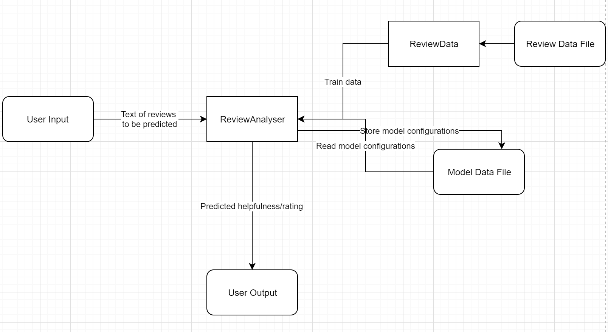

This page introduces the design of our code base -- a simple python module “analyser” containing a ReviewAnalyser class that can be used to predict rating and helpfulness given a list of review text. The class uses the best Natural Language Processing (NLP) and Machine Learning (ML) techniques we’ve found and can stores/reads the model configurations from local storage, thus users don’t have to train a model on their own.
System Architecture

To use the ReviewAnalyser, some extra data or files are needed. If no models have been trained before, the user can use Ocado’s review data CSV file or files with a similar format. ReviewData class will parse the CSV file and select proper data for ReviewAnalyser to train the models. Or the user can pass in their own data for training. If models have been trained before, ReviewAnalyser will store the configurations in json, h5 and joblib files. The user can provide those files and ReviewAnalyser will create models based on those data.
Once the ReviewAnalyser has proper models, the user can input a list of review text and ReviewAnalyser will return a list of predicted star ratings or helpfulness.
Design Patterns
Note: the code base is not the focus of our project and is thus very simple and uses few design patterns.
- Decorator: ReviewAnalyser is wrapped around ML models from other libraries to affect their outputs, especially for star rating prediction -- original model would output a list of probabilities that the review falls into each category, but our code modifies it and outputs the predicted star rating directly based on the probabilities.
- Facade: our code hides the complexity of Keras and Sk-learn objects.
- Bridge: our code can be used to soften changes in Keras and Sk-learn libraries. If there were big updates that affect how code should be used, only modifying ReviewAnalyser would be sufficient.
- Adapter: Similar to bridge, it acts as an adapter to libraries including Numpy, Keras and Sk-learn.
- Test Driven Development: for the testable part of the code base, we used pytests to guide the development and to make sure our code contains no errors.
Data Storage
Upon creating a ReviewAnalyser instance, a storage path needs to be provided. It will read/write model configurations files to this path. Files including:
- helpfulness_vect.joblib, rating_vect.joblib -- packed NLP processor objects for two problems
- helpfulness_ml.json, rating_ml.json -- Neural Network parameters
- helpfulness_ml.h5, rating_ml.h5 -- neuron weights
Implemented Functionalities
Our ReviewAnalyser is very simple. The User is able to import this class and use it to:
- Train Machine Learning Models for helpfulness and star rating prediction, either using data inputted directly from the user or from a CSV file that satisfies Ocado’s format.
- Store the trained models locally in a specified location.
- Read model data from a specified location to generate a usable model without training.
- Use the models to predict helpfulness and star rating given review text.
Detailed instructions on how to use the module can be found under Management page.